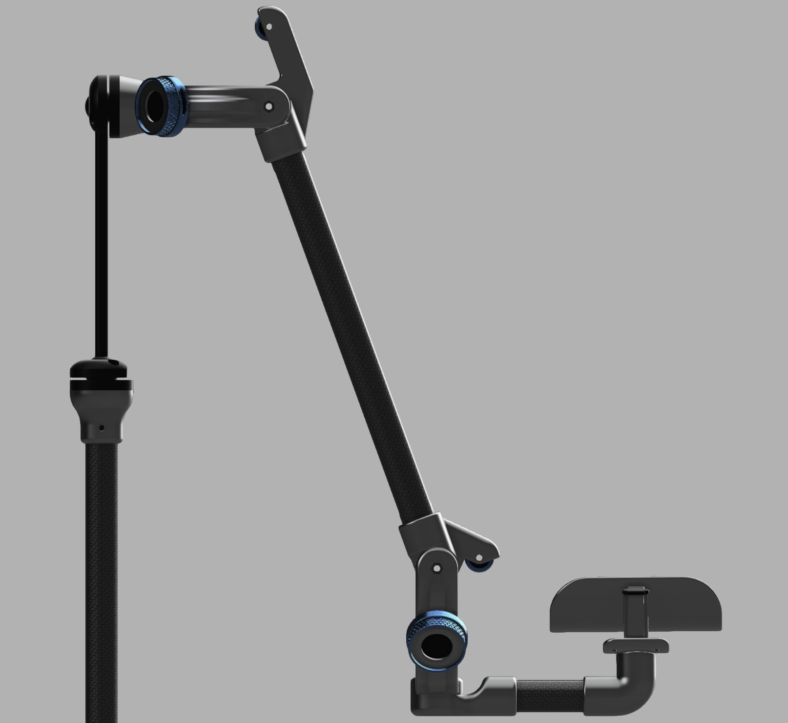
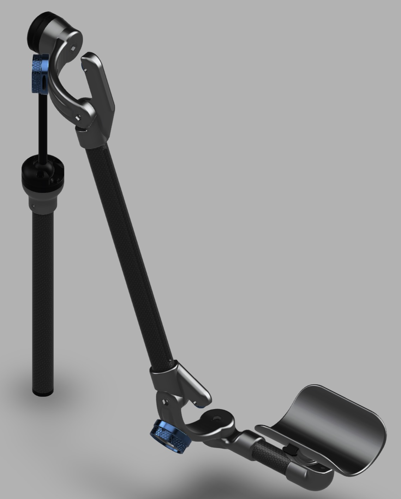
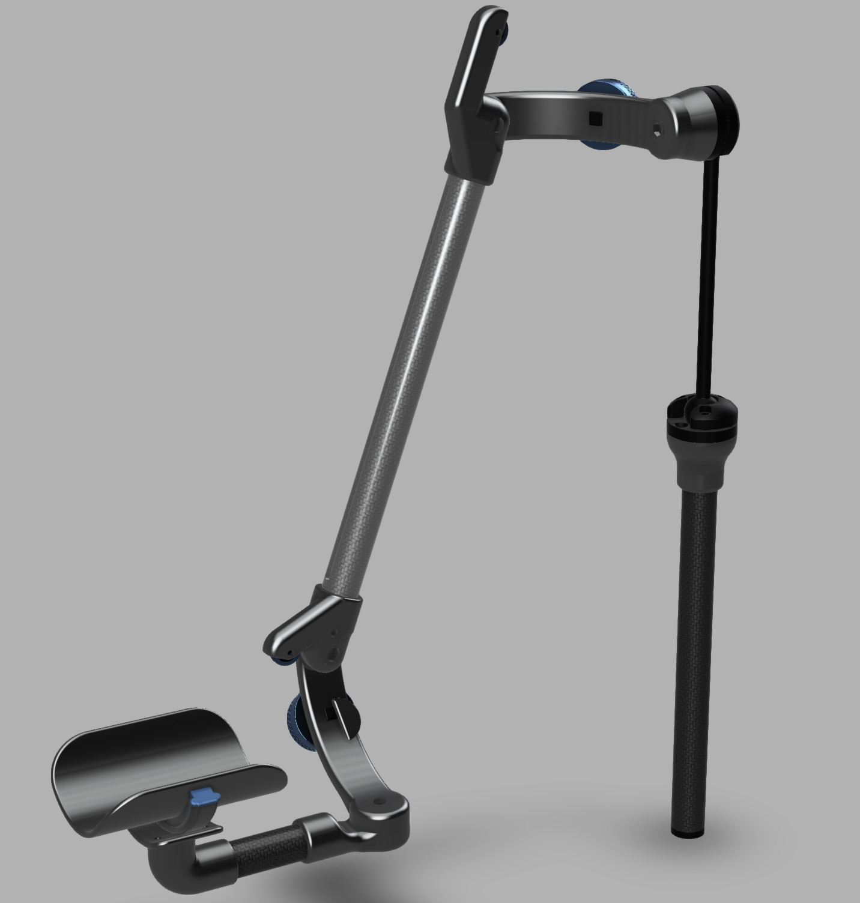

This page hosts visual documentation for past and present, personal and professional projects. I hope to demonstrate hands-on experience in design and engineering, and a willingness to learn multidisciplinary skills.
This project aims to create an affordable, repairable and user-reconfigurable all-in-one music composition product. It will probably be called the Arbutus-1, featuring a 2-octave keyboard, 4 rotary encoders, a small LCD display with a colour-coded user interface navigable through various command-keys, an integrated microphone, audio I/O jacks, and USB to charge the integrated batteries or transfer data with an external computer. The intended use-cases include synthesizing custom sounds from scratch or sampling audio to play on the keyboard, adding audio effects, sequencing or recording performances to audio, and arranging multiple audio tracks to create musical compositions.
The system level block diagram shows a multi-board design, with the Raspberry Pi CM4 (Compute Module) receiving user input through a microcontroller IC (chip), translating digital to analog audio and vice versa through an audio codec IC, and running an LCD for UI. An off-the-shelf BMS (Battery Management System) board is used to manage 3 series 21700 Li-ion batteries. Various power regulator ICs help take power input from the USB port for charging, supply the digital 5V components, and separately supply the sensitive analog audio circuitry to avoid digital noise.
The electrical validation board was laid out on a single board for simplicity, and no respect was payed to component location or aesthetics. Most SMD components were soldered by JLCPCB, and soldering with a microscopic 150x zoom camera was used to add the dual 100-pin snap connectors for the CM4, and to make bodge-wire fixes as pictured above. The current status is that power rails have been debugged and verified to work, the CM4 boots and communicates through USB, and the audio codec chip is addressable. Programming the ATmega chip with an AVR ISP programmer is the next step. Once electrical validation is complete, a new board can be laid out to fit within the chassis size constraints.



At my first Co-op term during the summer of 2024, I iteratively designed and prototyped a mobile arm support that uses mechanical tension and cables to assist people with limited arm strength. I used Fusion 360 and FDM 3D printing for the prototype. More information can be found in this document. The 3D scan below is interactive; drag to rotate, scroll to zoom.